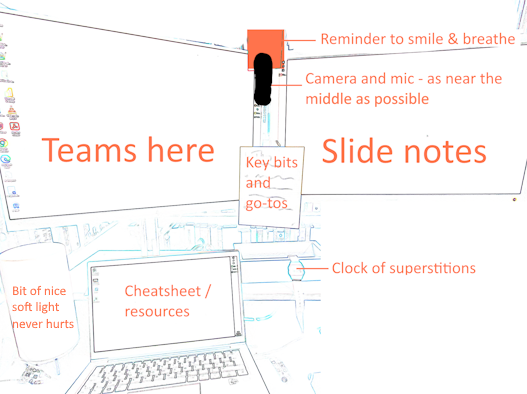

Developing Presentations
skills
beginner
Introduction
- these are materials for a short multi-session presentation skills course
- it’s aimed at people:
- who don’t do much presenting, or who have never presented before
- or who have had negative experiences of presenting
- or would like to improve their presentation skills, but don’t know where to start
- it’s aimed at people:
- it’s practical, so we’ll do a mixture of strategy and practice during the session
ImportantPlease note
- you will need to do a little bit of presenting during the course
A note about trust
- most of us find presenting hard
- in this course, please be gentle and professional:
- don’t mock or undermine
- don’t play devil’s advocate
- give people time to speak, and space to think
- expressly, don’t record any of this session in any way
NoteSession objective
To understand that presentation skills aren’t innate: they’re learnable, and teachable
Session outline
- why think about presentation skills?
- a minimal set of advice
- an opportunity to practice
- additional advice, questions, and chatter
Why think about presentation skills?
- possibly the ultimate in transferable skills
- most people are terrible at presenting
- presenting differs from listening in non-obvious ways
- but you can improve easily and cheaply
A minimal set of advice
- Be simple
- Be keen
- Be human
NoteSession objective
To identify a presentation topic, and start developing a plan for your presentation
Key presentation advice: be simple
- if in doubt, take it out
Why be simple?
- the asymmetry of presentation:
- you’ll know much more than your audience
- so you’ll worry about details, not basics
- but your audience will need the basics, not the details
- simple = clear
How to be simple?
- apply a hierarchy
- recursive planning
- use your constraints
The hierarchy
- you’ll need a single sentence that sums up your presentation
- everything else comes from this
- ideally you’ll have it in mind before you start
- but it often changes
- this is non-negotiable, and much harder than it looks
Task: make a sentence
- you’re going to present something you did this week at work
- can you sum it up in one sentence?
- that’s your win of the week sentence too
- several example prompts
- “What’s most important?”
- “What’s most interesting?”
- “what needs fixing?”
- …
Open questions as a way of understanding what to prepare
NoteHomework
Ask people to come with a sentence or two about their work that they’d like to present
NoteSession objective
Session aim: build a plan for a two-minute presentation on a topic of your choice
Recursive planning
- you now need 3-5 points that:
- support/explain/make up your main point
- each point should be a simple sentence
- then repeat: 3-5 points for each point, and so on
- you should almost certainly stop one layer of detail before you think you’ve said enough
Task: support your sentence
- “I managed to fix my booking system”
- “booking clinic slots was done manually”
- “that was slow and error-prone”
- “I used PowerAutomate + very strong language to automate it”
- “I had to learn to use
Apply to Eachto get that to work” - “I am now thinking about automating my other clinic bookings”
Constraints
- take your plan, and chop it down to size by considering:
- how long do you have to speak, exactly?
- one point every two minutes is pretty good going
- how long do you have to prepare?
- see below…
- who are your audience?
- the less closely they’re related to your work, the less material you’re going to cover
- how big is the audience?
- bigger = messier = less detail
- how long do you have to speak, exactly?
Practice time!
- we’ll work in pairs
- you’ve got a sentence, and 3-5 supporting bits
- we’re going to get you to present for two minutes only, no visual aids - just chat
- we’ll pause here to let everyone put their sentences in order
- then into pairs:
- one minute to find your feet
- two minutes presenting
- one minute of gentle, constructive, and positive feedback
- then swap
Prep time
- if you’re new at this, or it’s important, I would budget a huge amount of time to prepare
- one hour preparation per minute of speaking (seriously)
- this time isn’t for doing the work you’re presenting
- it’s just for planning the presentation
- beware procrastination by optimization (especially making slides before you’ve decided what you’re going to say)
Slides
- recursive plan + pictures = slides
- fewer than 20 words per slide
- usual advice is 2 minutes per slide
- put your details at the start and end
NoteSession objective
Session aim: deliver your presentation and receive feedback, and be a good audience for other presentations
Be human
- don’t try and cover everything
- absolutely leave time for Q+A (and ideally a bit of random chat) at the end
- don’t apologise, but do admit when things go wrong
- there’s asymmetry here too: your clunker will look like a mini-hitch to the audience
Make it easy for yourself

Tech
- it’s hard to give general advice, but think carefully about your specific tech
- tech often malfunctions during presentations, so you might have a backup (e.g. what to do if you can’t show your slides?)
- you’ll also be more likely to make mistakes with the tech when speaking
Be keen
- enthusiasm for your work, for your audience, and for what you’re presenting about is the easiest way to come off as knowledgeable and interesting
- plenty of preparation helps
- but for most of us this is scary
- fake it with socially-approved cheating!
- excited vs scared
- smile, eye contact, and a bit of hand gesturing
- build yourself a few lines to say at the start. Introductions work well. Don’t be afraid of being blunt!
- give yourself a sentence in and out of each slide/section
- build yourself some go-tos if you get stuck or the tech explodes